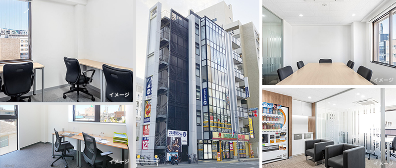
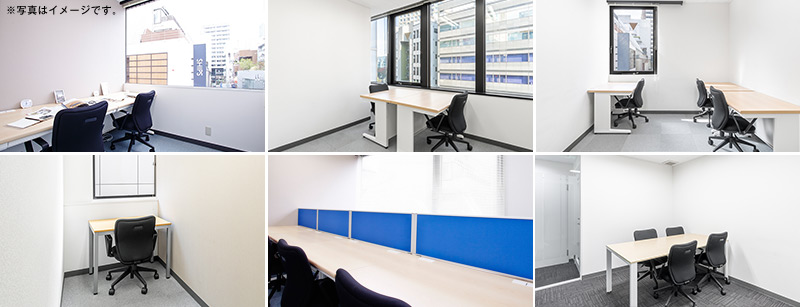

赤坂のレンタルオフィス｜Openoffice：東京・大阪をはじめ全国に50拠点以上
- 【個室レンタルオフィス】オープンオフィス HOME
- オープンオフィス赤坂
【個室レンタルオフィス】オープンオフィス 赤坂
オープンオフィス赤坂センターは、福岡市の大正通り沿い、警固交差点そばの警固ロイヤルビル4階〜6階に位置します。同ビルは、福岡市地下鉄空港線「赤坂」駅から徒歩7分の場所にあり、天神駅や福岡駅へのアクセスが大変便利です。当センターは、近隣に多くのオフィスビルや飲食店が並び活気があるエリアに位置し、徒歩圏内に大濠公園もあります。ビジネスの利便性と自然の豊かさを兼ね備えた赤坂エリアで、機能的でシンプルかつ快適なオフィス環境を提供します。

オープンオフィス赤坂周辺のMap
オープンオフィス赤坂の住所・アクセス
住所:
福岡県福岡市中央区警固二丁目19-13 警固ロイヤルビル 4, 5, 6F電車からのアクセス:
福岡市地下鉄空港線「赤坂駅」 徒歩7分オープンオフィス赤坂の特長
- ・福岡市地下鉄空港線「赤坂」駅徒歩7分
- ・1階にドラッグストア
- ・近隣に飲食店多数
- ・天神エリアと大濠公園に徒歩圏内
- ・近隣に法務局あり



| ◆初回納入金 | 利用料1ヶ月分の保証金 |
|---|---|
| ◆共益費 | 水道光熱費、ビル共益費、ゴミ出し、フロア・トイレの清掃、共有部分の消耗品代を含みます。 |
オープンオフィス赤坂が提供するオフィスサービス
-

高速インターネット
-

カラーレーザーコピー
専用のカードでコピーが出来ます -

ICカードキー
セキュリティを向上させています -

ミーティングルーム
インターネットで予約していただけます -

Wi-Fi完備

ネットワークプリンタ・スキャナ部屋のパソコンで操作できます
オープンオフィス赤坂近隣のスポット
銀行
福岡銀行けやき通り支店
福岡銀行赤坂門支店
レストラン
スターバックスコーヒー赤坂門店
SHIROUZU COFFEE 警固店
ビズトロ・ラ・ポーレ
ライオン食堂
ホテル
福岡ユウベルホテル
NKホテルズ
ショップ
セブンイレブン福岡警固2丁目店
ファミリーマート警固2丁目店
ローソン福岡警固西店
ジムセントラル24警固
リージャスグループのご案内
リージャス・グループは、柔軟なワークスペースを提供する世界最大の企業です。そのネットワークは世界120カ国1,100都市、3300拠点に及びます。会員数は250万人で、業界で成功を収める大小様々な企業や起業家の方々にご利用いただいています。
リージャスは、個室タイプのレンタルオフィス、コワーキングスペースなど多彩なオフィスプラン、近年需要が高まるモバイルワークやバーチャルオフィス、障害復旧サービスの提供を通じ、お客様が予算やワークスタイルに合わせて仕事を行うことができる環境を提供いたします。